Current Affairs — August 2026 · Class 2
Class 2 of the August 2026 monthly series (Ashish Gautam, Adda247) · 45 topics, grouped by exam category.
- Read once with Recall mode off. Hover over (or tap) any dotted name to see its static GK.
- Turn Recall mode on: the key facts are hidden. Say each one before you click to reveal it.
- Take the self-test at the end. Revise again tomorrow, in a week and in a month, using only the Rapid Revision box after that.
1States & Wildlife
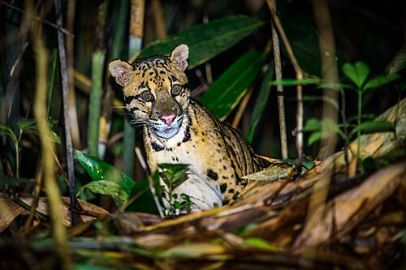
🎯 Likely QMeghalayaMeghalayaCapital ShillongChief Minister Conrad SangmaGovernor C. H. VijayashankarNational Parks Nokrek, BalpakramFestivals Behdeinkhlam, Wangala, Nongkrem launches mission to protect clouded leopard
- Meghalaya Government launched Mission Clouded Leopard to conserve the clouded leopard, the State Animal of Meghalaya.
- Scientific name: Neofelis nebulosa · IUCN status: Vulnerable.
🎯 Likely QCentre Launches Clouded Leopard Conservation Action Plan
- Government of India has launched the Clouded Leopard Conservation Action Plan (CAP) to protect the species across Northeast India.
- Prepared under the Government of India–GEF–UNDP initiative (GEF: Global Environment Facility · UNDP: United Nations Development Programme).
- Released during the 91st meeting of the Standing Committee of the National Board for WildlifeNational Board for WildlifeConstituted under the Wild Life (Protection) Act, 1972Chaired by the Prime MinisterIts Standing Committee is chaired by the Union Environment Minister, held in Coimbatore under the chairmanship of Union Environment Minister Bhupender Yadav.
- 14 priority conservation landscapes have been identified across Northeast India.
- Degraded habitats will be restored and wildlife corridors will be protected to connect fragmented forests.
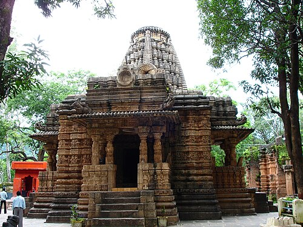
ChhattisgarhChhattisgarhFormation 1 November 2000Capital RaipurChief Minister Vishnu Deo SaiGovernor Ramen DekaNational Parks Guru Ghasidas, Indravati, Kanger ValleyTiger reserves Indravati, Udanti-Sitanadi, Achanakmar Distributes Assistive Devices under Project Sahara
- Chhattisgarh Chief Minister Vishnu Deo Sai distributed assistive devices to persons with disabilities.
- Distributed under Project Sahara – Divyangjan Equipment Distribution Programme 2026.
2Environment — Ramsar
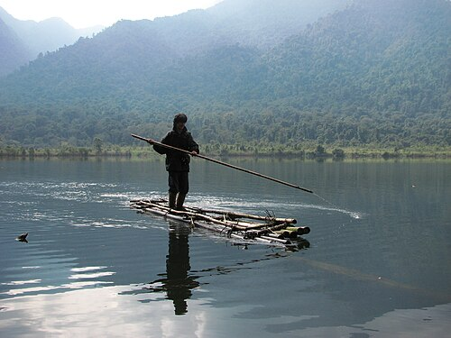
🎯 Likely QGlaw Lake becomes Arunachal Pradesh’s first Ramsar Site, taking India’s total to 101
- Glaw Lake in Arunachal Pradesh has been designated as a Wetland of International Importance under the Ramsar Convention. India now has 101 Ramsar Sites.
- It is the first Ramsar Site of Arunachal Pradesh.
- Located inside the Kamlang Tiger Reserve and Wildlife Sanctuary in the Eastern Himalayas; a natural freshwater wetland fed by perennial mountain streams; altitude approximately 1,168 metres.
- India’s 100th Ramsar Site was the Jay Prakash Narayan Bird Sanctuary (Surha Tal), in Ballia, Uttar Pradesh.
- Tamil Nadu remains the leader with 20 Ramsar Sites. Gujarat has the largest wetland area in India.
- India has the highest number of Ramsar Sites in Asia and the third-highest in the world, after the UK (176) and Mexico (144).
- Ramsar Convention signed in Ramsar, Iran, in 1971. Inclusion needs fulfilment of at least one of the nine criteria. The first Site was the Cobourg Peninsula in Australia, designated in 1974.
3Textiles & Culture
Giriraj Singh inaugurates Centre of Excellence for Handloom Technology at IIT Delhi
- Union Textiles Minister Giriraj Singh inaugurated the Centre of Excellence for Handloom Technology (CoE-HT) at IIT Delhi.
- It aims to modernise India’s handloom sector by combining traditional weaving skills with technology, research and innovation.
- Handloom 4.0 Mobile App — digital monitoring of loom productivity, product quality, machine maintenance and sustainability indicators.
- Handloom e-Vidya — digital learning and knowledge platform for training, skill development and capacity building.
- HandloomX — accelerator and incubation platform for startups and innovators across the Ministry of Textiles’ 5F value chain.
- Kalagriha Handloom Studio (GenZ Design Studio) — digital customisation and visualisation tools to connect modern consumers, especially Gen Z, with authentic handloom products.
- Threads of Valour — sustainability initiative that converts recycled defence textiles into premium handloom fabrics.
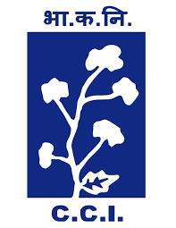
CCI Marks 56th Foundation Day, Launches ‘Kapas Darshan’ Bulletin
- Union Textiles Minister Giriraj Singh presided over the 56th Foundation Day of the Cotton Corporation of IndiaCotton Corporation of IndiaEstablished 31 July 1970 as a PSU under the Ministry of TextilesHQ Mumbai, MaharashtraCMD Lalit Kumar Gupta Limited (CCI) at Chhatrapati Sambhajinagar, Maharashtra.
- The ‘Kapas Darshan’ Bulletin was launched to strengthen information dissemination and awareness in the cotton sector.
- CCI is the Central Nodal Agency for purchasing cotton when market prices fall below the government-declared Minimum Support Price.
- Kapas Kanti Mission: five-year Mission for Cotton Productivity (2026–27 to 2030–31), outlay ₹5,659.22 crore; implemented by the Ministry of Agriculture and Farmers Welfare and Ministry of Textiles.
- Target: 498 lakh bales (170 kg lint each) by raising lint productivity from 440 kg/ha to 755 kg/ha by 2031.
New Delhi hosted GI & Beyond 2.0 Summit
- Ministry of Textiles organised the GI and Beyond 2.0 Summit in New Delhi; inaugurated by MoS Textiles Pabitra Margherita.
- Showcased India’s Geographical Indication-tagged handloom and handicraft products.
- Organised by the Office of the Development Commissioner (Handlooms) with the Handloom Export Promotion Council (HEPC).
- GI is a form of Intellectual Property Right; in India it is registered for goods, under the Geographical Indications of Goods (Registration and Protection) Act, 1999, in force from 15 September 2003.
- GI Registry: Chennai, Tamil Nadu. Valid for 10 years, renewable for further 10-year periods. First GI: Darjeeling Tea (West Bengal), 2004.
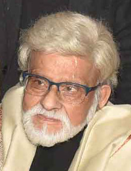
Commemorative Postage Stamp Released on Satish GujralSatish GujralYounger brother of former PM I. K. GujralPadma Vibhushan (1999)
- Department of Posts released a commemorative postage stamp to mark the birth centenary of Satish Gujral.
- Unveiled by Union Minister of Communications Jyotiraditya M. Scindia.
- He was a renowned painter and sculptor.
4Infrastructure & Education
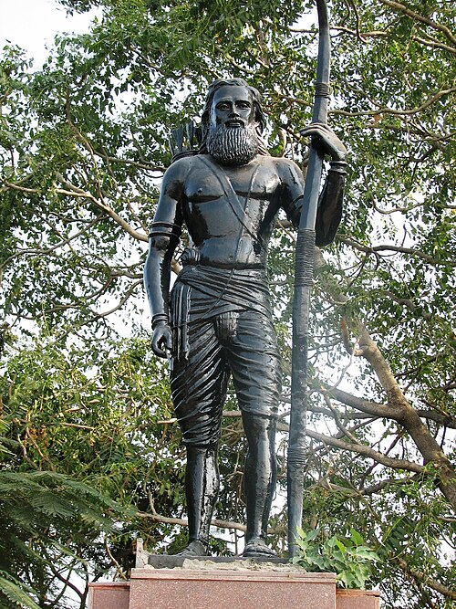
🎯 Likely QPrime Minister Narendra Modi Inaugurates Alluri Sitarama RajuAlluri Sitarama RajuLed the Rampa Rebellion (1922–24) against British rule in the Eastern Ghats International Airport
- At Bhogapuram in Vizianagaram district, Andhra Pradesh, near Visakhapatnam.
- A greenfield international airport — constructed on a completely new site. Initial capacity: 6 million passengers annually.
- Developed by GMR Visakhapatnam International Airport Limited, a subsidiary of GMR Airports, under the Public-Private Partnership model, at approximately ₹5,640 crore.
- Named after Alluri Sitarama Raju, a revolutionary freedom fighter and tribal leader from Andhra Pradesh.
President Murmu Inaugurates Jagadguru Kripalu University in Odisha
- President Droupadi Murmu inaugurated Jagadguru Kripalu University in Cuttack district, Odisha.
- Located at Banara in Damapada tehsil, near Cuttack.
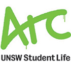
University of New South Wales Launches Bengaluru Campus
- Australia’s University of New South Wales (UNSW Sydney) has inaugurated its first international campus in India at Embassy Manyata Business Park, Bengaluru, Karnataka.
- UNSW received a Letter of Approval from the University Grants Commission.
OdishaOdishaFormation 1 April 1936 (Odisha Day / Utkal Dibasa)Capital BhubaneswarChief Minister Mohan Charan MajhiGovernor Kambhampati Hari BabuNational Parks Bhitarkanika, SimilipalZoological Park NandankananTiger Reserves Satkoshia, Similipal Government Signs ₹3,385 Crore Agreement to Expand BharatNet Connectivity
- Tripartite agreement to implement the amended BharatNet Programme with an investment of ₹3,384.82 crore.
- Aims to expand high-speed broadband across Gram Panchayats and rural areas of Odisha.
- Signed among: Government of Odisha, Digital Bharat Nidhi (Department of Telecommunications, Ministry of Communications) and BSNL.
Visakhapatnam partners with Moscow to build AI-driven smart transport system
- Greater Visakhapatnam Municipal Corporation (GVMC) signed a Memorandum of Cooperation (MoC) with the Government of Moscow to modernise Visakhapatnam’s urban transportation.
- Signed during the 5th International Transport Summit in Moscow.
5International
🎯 Likely QNauruNauruIsland country in the Pacific Ocean (Micronesia)No official capital; government in Yaren districtWorld’s smallest island republic officially changes its name to Naoero
- Nauru has officially changed its name to the Republic of Naoero, aligning it with the spelling and pronunciation in the Nauruan language.
- "Naoero" is pronounced "Now-ero".
- Population about 12,000; described as the world’s third-smallest country by population.
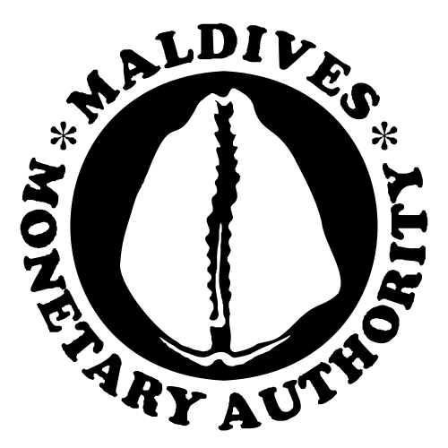
🏦 BankingMaldivesMaldivesCapital MaléCurrency Maldivian RufiyaaCentral bank Maldives Monetary Authority Launches Real-Time Fund Transfers to India via UPI UPIUnified Payments InterfaceLaunched 2016 by NPCI
UPIUnified Payments InterfaceLaunched 2016 by NPCI
- Maldives has launched a real-time cross-border money-transfer service to India, connecting the Maldives’ instant payment system Favara with India’s UPI.
- Implemented through cooperation among: Maldives Monetary Authority (MMA), RBI
 RBIReserve Bank of IndiaEst. 1 April 1935 (RBI Act 1934)Nationalised 1949HQ Mumbai, NIPLNIPLNPCI International Payments LtdInternational arm of NPCITakes UPI and RuPay abroad, Bank of Maldives and Maldives Islamic Bank.
RBIReserve Bank of IndiaEst. 1 April 1935 (RBI Act 1934)Nationalised 1949HQ Mumbai, NIPLNIPLNPCI International Payments LtdInternational arm of NPCITakes UPI and RuPay abroad, Bank of Maldives and Maldives Islamic Bank.
India and GuyanaGuyanaCapital GeorgetownSouth AmericaCurrency Guyanese Dollar Mark 60 Years of Diplomatic Relations
- MoS External Affairs Pabitra Margherita participated in celebrations marking the 60th anniversary of Guyana’s independence and 60 years of India–Guyana diplomatic relations.
- Guyana gained independence from British rule on 26 May 1966.
6Appointments
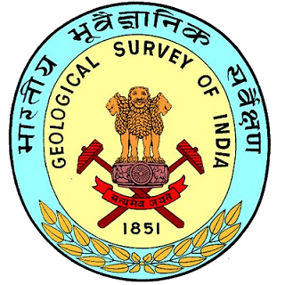
🎯 Likely QVarsha Ashok Aglawe Becomes First Woman DG of Geological Survey of IndiaGeological Survey of IndiaFormed 4 March 1851HQ Kolkata, West BengalMinistry of Mines
- Varsha Ashok Aglawe assumed charge as the 54th Director General of the Geological Survey of India.
- First woman to head the organisation in its 176-year history. She succeeded Asit Saha.
🏦 BankingRBIRBIReserve Bank of IndiaEst. 1 April 1935 (RBI Act 1934)Nationalised 1949HQ Mumbai appoints Monisha Chakraborty as executive director
- Monisha Chakraborty appointed Executive Director (ED); will oversee the departments of foreign exchange and financial markets regulation.
🏦 BankingK. Rajaraman’s Tenure as IFSCAIFSCAInternational Financial Services Centres AuthorityEst. 2020HQ GIFT City, GandhinagarUnified regulator for IFSCs Chairperson Extended till October 2028
- The Central Government has extended the tenure of K. Rajaraman as Chairperson of IFSCA beyond 31 July 2026.
- He will continue until he attains the age of 65 years in October 2028, or until further orders, whichever is earlier.
- IFSCA was established on 27 April 2020 under the IFSCA Act, 2019; unified regulator for financial products, services and institutions in International Financial Services Centres; HQ GIFT City
 GIFT CityGujarat International Finance Tec-CityNear Gandhinagar, GujaratIndia's first IFSCRegulated by IFSCA, Gandhinagar, Gujarat.
GIFT CityGujarat International Finance Tec-CityNear Gandhinagar, GujaratIndia's first IFSCRegulated by IFSCA, Gandhinagar, Gujarat.
Air Marshal Tejpal Singh Takes Charge as Deputy Chief of the Air Staff
- Air Marshal Tejpal Singh assumed charge as the Deputy Chief of the Air Staff (DCAS) of the Indian Air Force, succeeding Air Marshal Awadhesh Kumar Bharti.
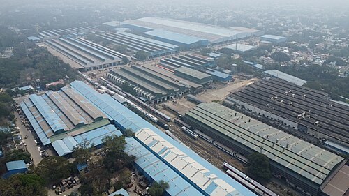
Manish Agarwal takes charge as General Manager of Integral Coach FactoryIntegral Coach FactoryFounded 2 October 1955HQ Chennai, Tamil NaduBuilds the Vande Bharat trains
- Manish Agarwal assumed charge as General Manager of Integral Coach Factory (ICF).
- He succeeds U Subba Rao, who has assumed charge as General Manager of Southern Railway.
Vishwesh Negi appointed India’s next envoy to IranIranCapital TehranCurrency Iranian Rial
- Diplomat Vishwesh Negi has been appointed as India’s next ambassador to Iran; presently a joint secretary in the Ministry of External Affairs.
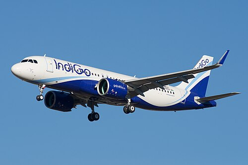
Willie Walsh Takes Charge as IndiGoIndiGoFounded 2005HQ Gurgaon, Haryana Chief Executive Officer
- Willie Walsh assumed charge as the CEO of IndiGo.
- He succeeded Pieter Elbers, who resigned on 10 March 2026.
7Sports
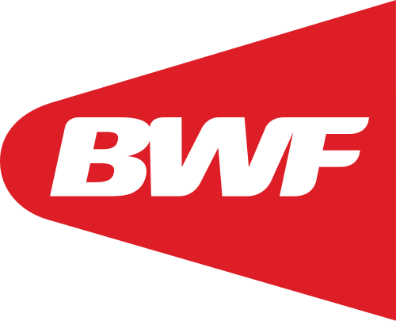
🎯 Likely QTanvi Sharma claims her maiden BWF World Tour title at Taipei Open
- India’s Tanvi Sharma won the women’s singles title at the Taipei Open 2026, a BWF World Tour Super 300 tournament, defeating Vietnam’s Nguyen Thuy Linh.
- Her first BWF World Tour title and first Super 300 title.
- At 17 years and 222 days, the youngest finalist in Taipei Open history — and by winning, its youngest champion.
Arunachal’s para shuttler Biri Takar clinches double medal at BWF Para World Circuit
- Biri Takar won two medals at the Brazil Para Badminton International 2026: Gold in Men’s Doubles and Bronze in Men’s Singles.
- Held in São Paulo, Brazil.
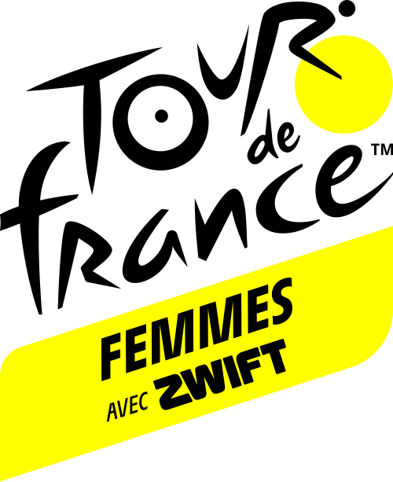
Harshita Jakhar Becomes First Indian Woman to Feature at Tour de France Femmes
- Rajasthan cyclist Harshita Jakhar became the first Indian woman to feature at the Tour de France Femmes.
- She participated in the ceremonial start of Stage 2 at Aigle, Switzerland.
🎯 Likely QCabinet Approves Expanded Khelo IndiaKhelo IndiaRun by the Ministry of Youth Affairs and SportsNational Sports Day: 29 August (birthday of Major Dhyan Chand) from 2026–27 to 2030–31
- Union Cabinet approved the expansion of the Khelo India Scheme and the Assistance to National Sports Federations Scheme for five years (2026–27 to 2030–31).
- Outlay for Khelo India: ₹29,054 crore. Khelo India was launched in 2017 to identify grassroots talent and provide professional coaching and sports infrastructure.
- Assistance to the National Sports Federations (ANSFs): ₹7,387 crore over 2026-31.
- Two new school-sports initiatives: Khelo India Feeder Schools (KIFS) and Khelo India Utkrishta Vidyalayas (KIUV) — to “integrate sports with mainstream education and enable early identification and systematic nurturing of talented children.”
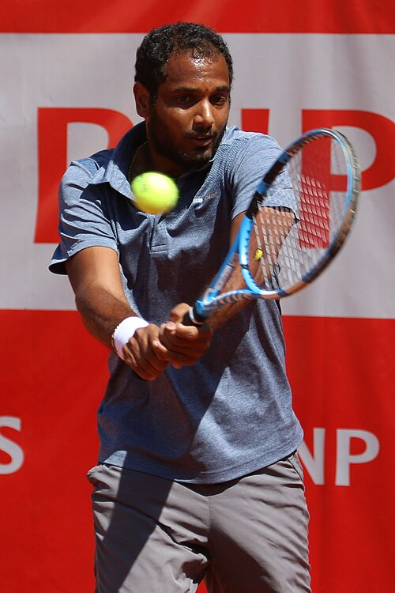
India’s Ramkumar Ramanathan and Vijay Sundar Prashanth win Bonn Open doubles title
- Ramkumar Ramanathan and Vijay Sundar Prashanth clinched the doubles title at the Bonn Open 2026.
- The unseeded Indians defeated England’s Scott Duncan and Sweden’s Adam Heinonen.
- Ramkumar’s second ATP Challenger doubles trophy of the year, after the Texas Spine and Joint Challenger Men’s Championship in June with Rithvik Bollipalli. He now has 13 ATP Challenger titles.
8Defence
Indian Navy Launches Fifth Diving Support Craft DSC A24
- The Indian Navy launched DSC A24 (Yard 329), the fifth and final vessel of the Diving Support Craft Project, at Titagarh, Kolkata, West Bengal.
- Built by Titagarh Rail Systems Limited (TRSL), Kolkata.
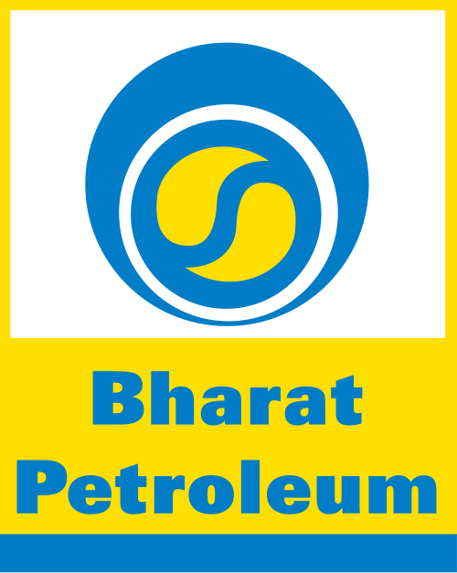
🎯 Likely QArmy Launches Indigenous Xtreme Weather Grade Diesel for High-Altitude Operations
- Chief of the Army Staff General Dhiraj Seth launched the indigenously developed Xtreme Weather Grade (XWG) Diesel in New Delhi.
- Jointly developed by the Indian Army and BPCL over the past year.
- Designed for combat and logistics vehicles in high-altitude and severe winter regions.
- Remains operational at temperatures as low as –42°C, preventing fuel thickening and filter clogging.
Indian Air Force Concludes Counter-Drone Exercise ‘ROTOR CLAP III’
- The IAF concluded Exercise ROTOR CLAP III at the Pokhran Field Firing Range, Jaisalmer, Rajasthan.
- Theme: “Counter-UAS” — operations against Unmanned Aerial Systems (drones).

BEL and Esri India Partner to Boost Defence Geospatial Capabilities
- Bharat ElectronicsBharat ElectronicsFounded 1954HQ Bangalore, Karnataka Limited, a Navratna CPSE under the Ministry of Defence, signed an MoU with Esri India on defence projects.
- Focus: GIS, Location Intelligence and GeoAI (Geospatial Artificial Intelligence).
9Economy, Power & Technology
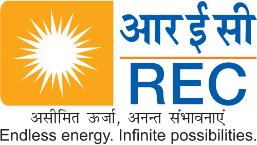
🏦 BankingREC and PFC Sign ₹26,850 Crore Loan Pact for Meja Thermal Power Expansion
- REC Limited and PFC signed a Common Loan Agreement worth ₹26,850 crore with Meja Urja NigamMeja Urja NigamJoint venture of NTPC and UPRVUNLREC is a subsidiary of PFC (since 2019)Both are Maharatna NBFCs under the Ministry of Power Private Limited (MUNPL).
- Finances the Stage-II expansion of the Meja Thermal Power Project in Prayagraj district, Uttar Pradesh.
- Debt shared equally, 50:50, between REC and PFC.
- New capacity 2,400 MW (3 × 800 MW); estimated project cost ₹38,357.81 crore.
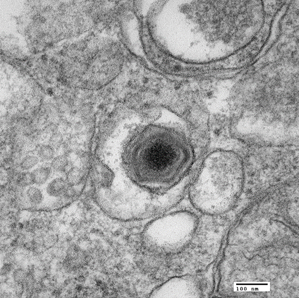
🎯 Likely QIndia Develops First Indigenous African Swine Fever Vaccine
- Agriculture Minister Shivraj Singh Chouhan dedicated India’s first indigenous MA-104 Cell Line-Based Live Attenuated African Swine Fever Vaccine to the nation.
- Unveiled during the 98th Foundation Day of ICAR
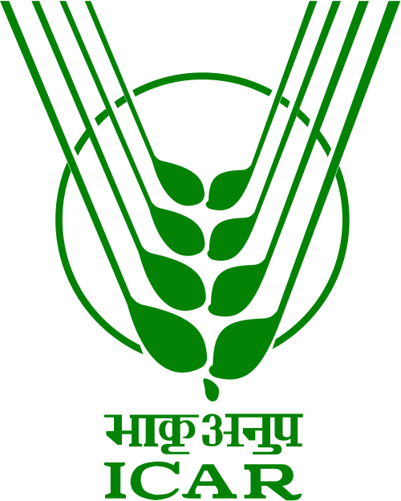
ICARIndian Council of Agricultural ResearchEst. 1929HQ New DelhiUnder Department of Agricultural Research & Education. - Developed by ICAR–National Institute of High Security Animal Diseases (NIHSAD), Bhopal.
- Uses an Indian field isolate of the ASF Virus Genotype II. ASF is a highly contagious viral disease affecting domestic pigs and wild boars.
IBM and Sarvam Partner to Accelerate Sovereign AI Adoption in India
- IBM and Indian AI company Sarvam will jointly develop and pilot Sovereign AI solutions for Central and State governments, public-sector organisations, and regulated sectors such as banking, insurance, healthcare and telecom.
- Sarvam was earlier selected under the IndiaAI MissionIndiaAI MissionApproved March 2024Outlay ₹10,371.92 croreUnder MeitY to develop an indigenous sovereign LLM for Indian languages, voice-based applications and secure deployment at population scale.
- The IBM AI GovTech Innovation Center in Lucknow will function as a joint incubation hub and testing centre.
10Important Days
World Lung Cancer Day is observed annually on August 1st
- Observed on 1 August to raise global awareness, promote early detection, and educate the public on risk factors.
World Breastfeeding Week was observed from 1 to 7 August
- Observed every year from 1 to 7 August to promote, protect and support breastfeeding.
- Coordinated by the World Alliance for Breastfeeding Action (WABA); supported by WHO and UNICEF.
- Theme: Breastfeeding for a Sustainable Start in Life: Strengthen What Works.
International Clouded Leopard Day was observed on August 4th
- Also called National Clouded Leopard Day; held on 4 August every year.
- Founded in 2018 by The Aspinall Foundation.
11Obituaries & Books
Educationist and Former Governor D. Y. Patil Passes Away
- Renowned educationist and former Governor Dr. Dnyandeo Yashwantrao Patil (D. Y. Patil) passed away.
- Served as Governor of Tripura and Bihar, and Acting Governor of West Bengal; also a member of the Maharashtra Legislative Assembly.
- Awarded the Padma Shri in 1991.
Justice M S Liberhan has passed away
- Former Chief Justice Manmohan Singh Liberhan passed away.
- Best known for heading the one-member Liberhan CommissionLiberhan CommissionSubmitted its report in 2009, about 17 years after it was set up, which investigated the circumstances leading to the demolition of the Babri Masjid in Ayodhya.
- Appointed head of the commission on 16 December 1992.
- He was Chief Justice of the Andhra Pradesh High Court and previously Madras High Court.
Former Army Chief General V.N. Sharma Passed Away
- Former COAS General Vishwa Nath Sharma passed away.
- Served as the 14th Chief of the Army Staff from 1 May 1988 to 30 June 1990.
- He was the first president’s commissioned officer to lead the Indian Army (commissioned June 1950).
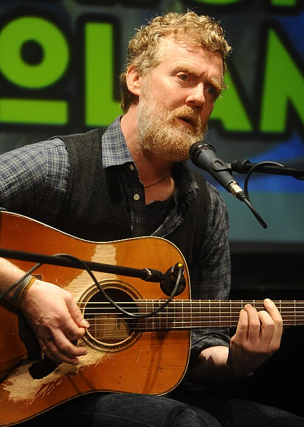
Oscar-Winning Irish Musician Glen Hansard Passed Away
- Irish singer-songwriter, musician and actor Glen Hansard passed away at 56.
- In 2008, he and Markéta Irglová won the 80th Academy Award for Best Original Song for "Falling SlowlyFalling SlowlyFrom the film Once (2007)".
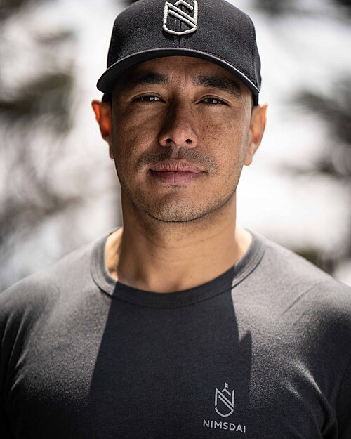
Renowned Mountaineer Nirmal Purja has passed away
- Nepal-born mountaineer Nirmal “Nimsdai” Purja (43) died in an avalanche on Broad Peak in the Karakoram range.
- In 2019, he climbed all 14 mountains higher than 8,000 m in only 6 months and 6 days under Project Possible.
Italian Football Legend Franco Baresi Passes Away
- Former Italy and AC Milan captain Franco Baresi (66), one of football’s greatest defenders, passed away.
- A one-club player — his entire 20-season career with AC Milan.
- Part of the Italian team that won the 1982 FIFA World Cup.
Biography of S.N.N. Sankaralinga Iyer Launched
- Book on S. N. N. Sankaralinga Iyer, founder of Indo Commercial Bank and India Cements.
- Book: “Cementing Legacies: The Life of SNN Sankaralinga Iyer — A Pioneering Polymath”, written by veteran journalist K. Balakumar.
12Self-test
Answer out loud first, then click to check. Re-test the ones you missed tomorrow.
Meghalaya's State Animal, its scientific name and IUCN status?
Clouded leopard — Neofelis nebulosa — Vulnerable
The Centre's Clouded Leopard CAP was prepared under which initiative, and how many landscapes?
GoI–GEF–UNDP; 14 priority landscapes in the Northeast
Where was the 91st NBWL Standing Committee meeting held?
Coimbatore (chaired by Bhupender Yadav)
Chhattisgarh's programme for assistive devices to Divyangjan?
Project Sahara
Arunachal's first Ramsar Site, and where is it located?
Glaw Lake — inside Kamlang Tiger Reserve
India's 100th Ramsar Site?
Jay Prakash Narayan Bird Sanctuary (Surha Tal), Ballia, UP
State with most Ramsar Sites, and State with largest wetland area?
Tamil Nadu (20); Gujarat
World's first Ramsar Site?
Cobourg Peninsula, Australia (1974)
Where is the Centre of Excellence for Handloom Technology?
IIT Delhi
Which initiative converts recycled defence textiles into handloom fabric?
Threads of Valour
CCI's new bulletin and its HQ?
Kapas Darshan; Mumbai
Kapas Kanti Mission outlay and lint productivity target?
₹5,659.22 crore; 440 → 755 kg/ha by 2031
India's first GI product, and where is the GI Registry?
Darjeeling Tea (2004); Chennai
Alluri Sitarama Raju International Airport — location and developer?
Bhogapuram, Vizianagaram (AP); GMR, PPP, ~₹5,640 crore
Nauru's new official name?
Republic of Naoero
Maldives' instant payment system linked to UPI?
Favara
First woman DG of the Geological Survey of India?
Varsha Ashok Aglawe (54th DG)
IFSCA chairperson whose tenure is extended to October 2028?
K. Rajaraman
New CEO of IndiGo, and whom did he succeed?
Willie Walsh; Pieter Elbers
Tanvi Sharma's Taipei Open title — level, and her age?
Super 300; 17 years 222 days (youngest champion)
Khelo India outlay for 2026–31, and the ANSF amount?
₹29,054 crore; ₹7,387 crore
XWG Diesel — developed by whom and down to what temperature?
Indian Army + BPCL; –42°C
Where was Exercise ROTOR CLAP III held, and its theme?
Pokhran, Jaisalmer; Counter-UAS
Meja Stage-II — loan amount and capacity?
₹26,850 crore (REC:PFC 50:50); 2,400 MW (3×800)
Who developed India's first African Swine Fever vaccine?
ICAR–NIHSAD, Bhopal
World Breastfeeding Week dates and coordinator?
1–7 August; WABA
Liberhan Commission investigated what?
Demolition of the Babri Masjid, Ayodhya (set up 16 Dec 1992)
Song that won Glen Hansard the Oscar?
"Falling Slowly" (80th Academy Awards, 2008)
⚡ Rapid Revision
- Clouded leopard: Meghalaya Mission (State Animal, Vulnerable) · Centre CAP (GEF–UNDP, 14 landscapes) · Day 4 Aug.
- Ramsar 101 = Glaw Lake (Arunachal’s first, Kamlang TR) · 100 = Surha Tal (Ballia) · TN 20 most · UK 176, Mexico 144.
- Handloom CoE at IIT Delhi: Handloom 4.0, e-Vidya, HandloomX, Kalagriha, Threads of Valour.
- CCI 56th Foundation Day (est. 31 Jul 1970): Kapas Darshan · Kapas Kanti ₹5,659.22 cr, 498 lakh bales.
- GI & Beyond 2.0 (Delhi) · GI Act 1999, in force 2003 · Registry Chennai · 10 years · Darjeeling Tea first.
- Alluri Sitarama Raju airport: Bhogapuram (Vizianagaram), GMR PPP, ₹5,640 cr, 6 mn pax.
- Nauru → Republic of Naoero · Maldives Favara ↔ UPI · India–Guyana 60 years.
- GSI first woman DG: Varsha Aglawe · IndiGo CEO: Willie Walsh · IFSCA: K. Rajaraman to Oct 2028 · ICF GM: Manish Agarwal.
- Tanvi Sharma: Taipei Open Super 300 (youngest) · Khelo India ₹29,054 cr + ANSF ₹7,387 cr · Harshita Jakhar Tour de France Femmes.
- Navy DSC A24 (5th, TRSL) · XWG Diesel –42°C (Army + BPCL) · ROTOR CLAP III (Pokhran).
- Meja II: ₹26,850 cr REC+PFC, 2,400 MW, Prayagraj · ASF vaccine NIHSAD Bhopal · IBM + Sarvam sovereign AI.
- Obits: D.Y. Patil, Justice Liberhan, Gen V.N. Sharma (14th COAS), Glen Hansard, Nirmal Purja, Franco Baresi.
End of August 2026 · Class 2